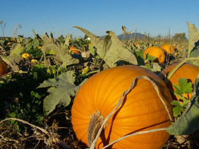

The leaves are changing, and it’s finally cool enough to wear a sweatshirt again - fall is here! And what better way to celebrate fall than to pick out a pumpkin at a local pumpkin patch? This season, though, before you gravitate to the biggest, easiest-to-carve pumpkin, think about picking up a sugar (or pie) pumpkin to make delicious fall treats.
Sugar pumpkins give any pumpkin recipe a better flavor and are smaller than your average Jack-O-Lantern pumpkin: They are about 4 pounds in size. Not only do they taste good, but they’re an excellent source of nutrients. All pumpkins contain a lot of beta-carotene, a phytonutrient that can reduce the risk of heart disease and the development of certain types of cancer. So, don’t just carve a pumpkin this year, try these recipes for unique dishes that capture fall’s flavor.
Note: Many of the recipes below call for pumpkin purée. Here’s how to make it via epicurious.com: Cut a sugar pumpkin in half and scrape out the seeds. Place it cut-side down in a baking dish and pour in about a quarter inch of hot water. Bake at 400 degrees Fahrenheit until the flesh is tender, 40 to 50 minutes. Turn the pumpkin halves cut-side up to cool. Scoop the pumpkin flesh from the skin and purée it in a food processor until smooth. Transfer the purée to a large sieve lined with a double layer of cheesecloth and let it drain for two to three hours until it is firm enough to hold its shape on a spoon.
Rigatoni with Pumpkin and Bacon (from marthastewart.com)
Coarse sea salt
8 slices bacon, coarsely chopped
1 medium onion, halved and thinly sliced
1 sugar pumpkin (about 3 pounds), peeled and halved, seeds removed, and flesh cut into
3/4-inch cubes
1 tbsp fresh sage, finely chopped
1/4 tsp allspice
1 1/2 cups homemade or low-sodium store-bought chicken stock
3 tbsp heavy cream
Freshly ground pepper
1 pound rigatoni
1/2 cup finely grated Parmesan cheese, plus more for serving
2 tbsp hulled raw pepitas (pumpkin seeds), toasted, for garnish
Bring a large pot of water to a boil; add salt. Put bacon into a large skillet over medium heat. Cook, stirring, until bacon is almost crisp, about 5 minutes. Using a slotted spoon, transfer bacon to a plate lined with paper towels; let drain.
Add onion to skillet with bacon grease. Cook, stirring, until soft, 12 to 15 minutes. Add pumpkin, sage, 1/2 teaspoon salt, and the allspice. Cook, stirring occasionally, for about 5 minutes. Add stock and cream; bring to a boil. Reduce heat to medium-low, and simmer until pumpkin is soft and sauce has thickened slightly, about 25 minutes. Season with pepper.
Meanwhile, add pasta to boiling water, and cook until al dente. Drain pasta, and add to skillet. Add the bacon and Parmesan, and toss to combine. Divide among bowls. Serve with Parmesan on the side, and garnish with pepitas.
Yield: Makes 4 servings.
Note: For a vegetarian version, try omitting the bacon (cook onions in olive oil instead of grease) and replace chicken stock with vegetable stock. To find local producers of organic and chemical-free meats from humanely raised animals, check out eatwild.com.
Pumpkin Ravioli (from allrecipes.com)
Filling
1 cup ricotta cheese
1/2 cup pumpkin purée
1/2 tsp salt
1/4 tsp ground nutmeg
Pasta
2 cups all-purpose flour
1/4 cup tomato paste
1/2 tsp salt
1 tbsp olive oil
2 eggs
2 tbsp water
Mix the cheese, pumpkin, 1/2 teaspoon salt, and the nutmeg. Set filling aside.
Mix the flour, with remaining salt in a large bowl; make a well in the center of the flour. Beat the tomato paste, oil and eggs until well blended, and pour into the well in the flour. Stir with a fork, gradually bring the flour mixture to the center of the bowl until the dough makes a ball. If the dough is too dry, mix in up to 2 tablespoons of water.
Knead lightly on a floured, surface, adding flour if dough is sticky, until smooth and elastic, about 5 minutes. Cover, and let rest for another 5 minutes. Divide the dough into 4 equal parts. Roll the dough, one part at a time, into a rectangle about 12-by-10-inches. Keep the rest of the dough covered while working.
Drop 2 level teaspoons of filling onto half of the rectangle, about 1 1/2 inches apart in 2 rows of 4 mounds each. Moisten the edges of the dough, and the dough between the rows of pumpkin mixture with water. Fold the other half of the dough up over the pumpkin mixture, pressing the dough down around the pumpkin. Cut between the rows of filling to make ravioli; press the edges together with a fork, or cut with a pastry wheel. Seal edges well. Repeat with the remaining dough and pumpkin filling. Place ravioli on towel. Let stand, turning once, until dry, about 30 minutes.
Cook ravioli in 4 quarts of boiling salted water just until tender; drain carefully.
Yield: Makes 6 servings.
Pumpkin and Shrimp Bisque (from epicurious.com)
Shrimp Stock
1 pound large shrimp (16 to 20)
2 tbsp extra-virgin olive oil
3/4 cup dry white wine
3 cups homemade or low-sodium, store-bought chicken stock
Pinch saffron threads (about 24)
2 ribs celery, coarsely chopped
1 medium onion (about 8 ounces), coarsely chopped
4 fresh bay leaves, torn or 2 dried
3 3-inch sprigs fresh sage
Peel and devein shrimp, reserving the shells. Cover the shrimp and refrigerate. Heat the olive oil in a medium (3-quart) heavy-bottomed saucepan over high heat until it begins to smoke. Add the shrimp shells to the pan and cook, stirring constantly, until they turn deep orange and are just beginning to brown, 3 to 4 minutes. This step - pan roasting the shells - gives the stock much of its flavor, so take the time to do it carefully. The roasted shells should release a concentrated, toasty, shrimp aroma that will fill your kitchen. Add the wine to the pan, first turning off heat to prevent the alcohol from igniting, then boil it over medium heat until all the liquid is evaporated. Add the chicken stock, saffron, celery, onion, bay leaves and sage. Bring to a boil, then reduce the heat to the lowest setting. Partially cover the pan and simmer gently for 30 minutes. Strain the stock through a fine sieve, pushing down on the solids with the back of a spoon to extract all the liquid. Rinse out the saucepan and pour the stock back into it.
Bisque
2 cups fresh pumpkin purée
1/2 cup heavy cream
About 3/4 tsp salt
Scant pinch cayenne pepper
1 tbsp freshly squeezed lemon juice
Freshly ground black pepper
1 tbsp extra-virgin olive oil
2 tsp fresh sage, finely chopped
Whisk the pumpkin, cream, salt and cayenne into the shrimp stock. Bring the soup to a simmer, then cook very gently uncovered over low heat for 10 minutes. Stir in the lemon juice, taste and season with black pepper and more salt if needed. (The soup can be made up to this point up to 1 day ahead; store covered in the refrigerator. Keep the peeled shrimp in a resealable bag buried in a bowl of ice in the refrigerator.)
Pour the olive oil into a large sauté pan placed over medium heat. When hot, add the reserved shrimp and sage and cook, tossing often, until the shrimp is just cooked through, pink, and no longer translucent, but not curled into a circle, 2 to 3 minutes. They should still have a tender snap when you bite into them. Arrange the shrimp in warmed serving bowls or a tureen. Bring the soup back to a simmer and then ladle it over the shrimp. Serve right away.
Yield: Makes 8 servings.
Thai Pumpkin Soup (from foodnetwork.com)
Soup
3 cups coconut water
3.5 ounces coconut meat
10.5 ounces sugar pie pumpkin, seeded and cubed into 1-inch squares
1 1/2 tsp ground cumin
1 1/2 tsp ground coriander
3/4 tsp salt
3 black peppercorns
1 clove garlic, chopped
3/4 tsp curry paste, or more to taste
2 1/2 tbsp extra virgin olive oil
1/3 cup almond milk
Garnish
1 recipe Marinated Portobello Mushrooms, below
1/4 cup coconut cream (not to be confused with coconut milk)
1/2 cup fresh cilantro leaves, chopped
2 scallions, thinly sliced
Blend all soup ingredients together in a high-speed blender, in batches if needed. Blend until the pumpkin is completely puréed and the soup has a silky texture.
To serve, pour soup into warm soup bowls. Place 2 teaspoons of the marinated portobellos in the middle of each bowl. Decorate each soup with coconut cream, cilantro and scallions.
Marinated Portobello Mushrooms
1 tbsp shoyu (Japanese soy sauce)
1 tbsp extra virgin olive oil
1 tbsp water
1/2 tsp ginger, minced
1 portobello mushroom, gills removed, cut into small dice
Combine the shoyu, olive oil, water and ginger in a small bowl. Add the mushrooms and marinate at room temperature for at least 30 minutes. Drain mushrooms and use as directed.
Yield: Makes 4 servings.
Pumpkin Bread (from the joykitchen.com)
1 1⁄2 cups all-purpose flour
1 tsp baking soda
1⁄4 tsp baking powder
1 tsp salt
1 1⁄2 tsp ground cinnamon
1 tsp ground ginger
1⁄2 tsp grated or ground nutmeg
1⁄4 tsp ground cloves
1⁄3 cup water or milk
1⁄2 tsp vanilla
6 tbsp (3⁄4 stick) butter, softened
1 1⁄3 cups sugar or 1 cup sugar plus 1⁄ 3 cup packed brown sugar
2 large eggs
1 cup pumpkin purée
1⁄2 cup walnuts or pecans, coarsely chopped
1⁄3 cup raisins or chopped dates
Preheat the oven to 350 degrees Fahrenheit. Grease a 9-by-5-inch loaf pan. Whisk together flour, baking soda, baking powder, salt, cinnamon, ginger, nutmeg and cloves. Set aside. Combine milk and vanilla in a small bowl. Set aside. Beat butter and sugar in a large bowl until fluffy. Beat eggs one at a time into the butter-sugar mixture. Add pumpkin and beat on low speed until blended. Alternate adding flour mixture and milk mixture in three parts, beating on low speed and stirring with a rubber spatula until smooth. Fold in nuts and dates.
Pour into the prepared pan and spread evenly. Bake until a toothpick inserted in the center comes out clean, about 1 hour. Let cool in the pan for 5 to 10 minutes before unmolding to cool completely on a rack.
Yield: Makes one loaf.
Pumpkin Ice Cream (from More-With-Less by Doris Janzen Longacre)
2 cups milk
4 egg yolks or 2 eggs, beaten
1 cup sugar
1/8 tsp salt
2 cups mashed, cooked pumpkin
2 tsp cinnamon
1 tsp nutmeg
1/2 tsp allspice
1/4 tsp ginger
1/2 tsp vanilla
1 cup cream
Scald (heat without boiling or burning) milk in a double boiler. Combine the eggs, sugar, salt, pumpkin, cinnamon, nutmeg, allspice, ginger and vanilla in a bowl and add to the hot milk. Cook (heat to steaming) ingredients 4 minutes longer and then let cool. Add cream. Pour into a freezer container and crank until stiff.
Yield: Makes 10 servings.
Now that you’ve seen all the delicious ways that this friendly, orange squash can be put to use; hurry up and go find one at your nearest pumpkin patch. If you need help finding one, check out Local Harvest. For more information about pumpkins, read “Three Phunky Pumpkins.” Or if you’re already a pumpkin fan, share some of your favorite recipes by posting a comment below.
|
 FOTOLIA Try picking out a fresh pumpkin at a pumpkin patch before making your delicious treats! |
|
|